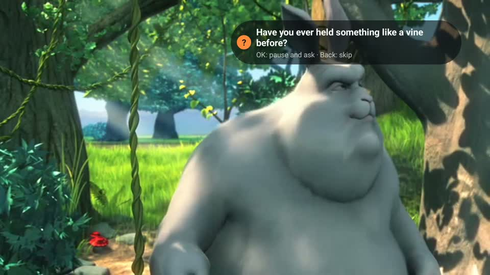
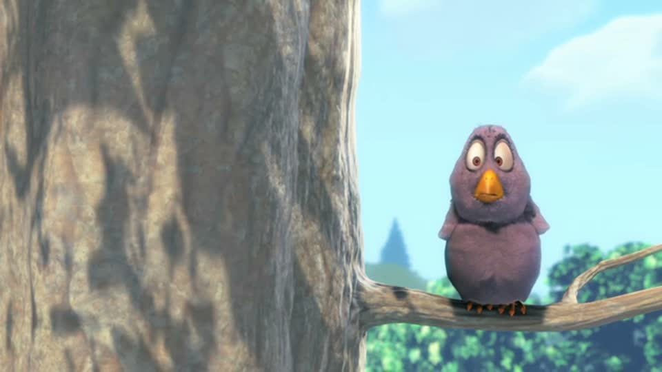
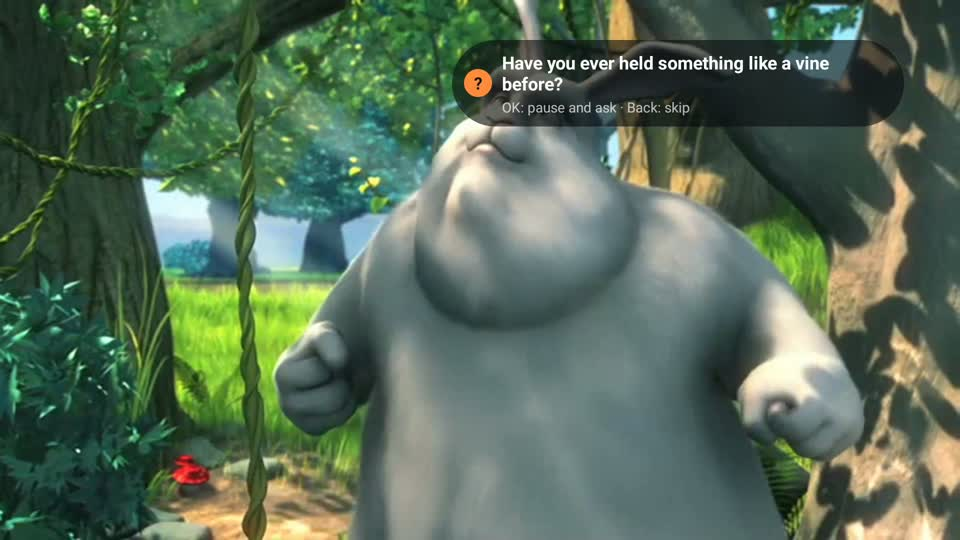
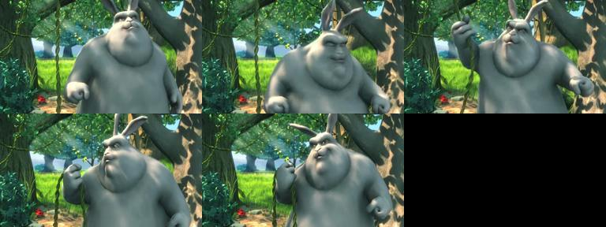
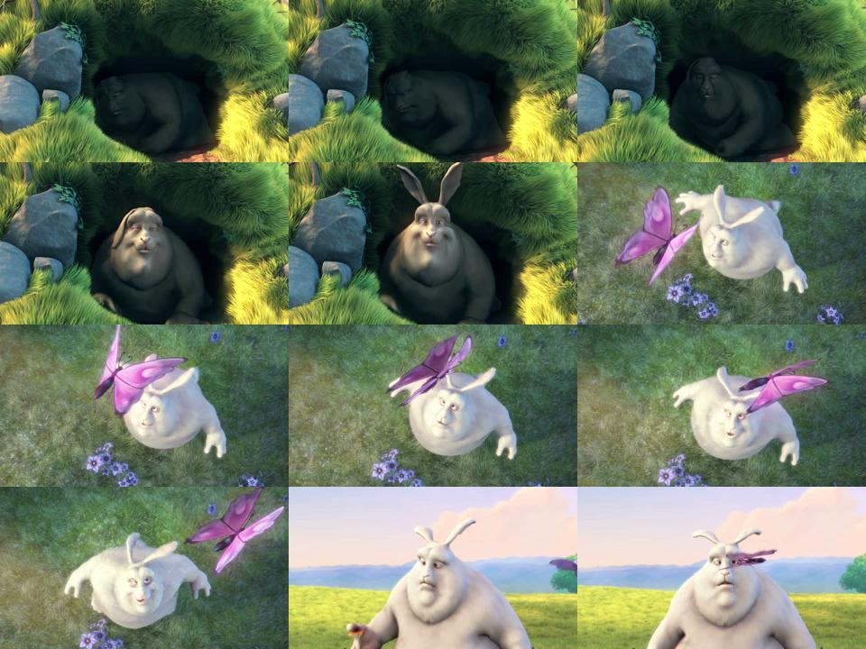
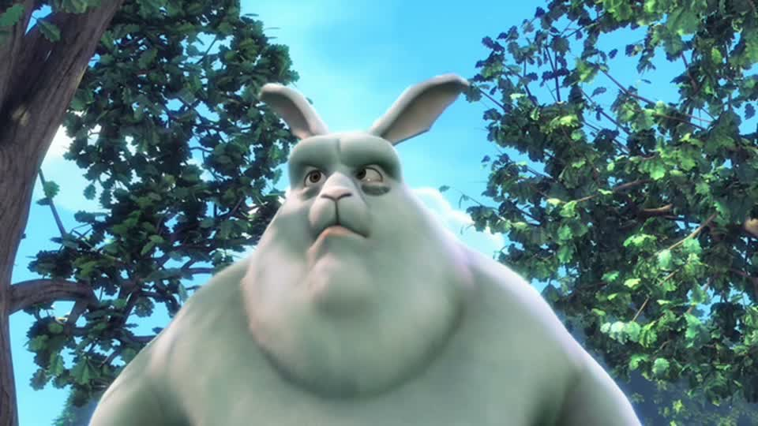

Ask-Along デモ動画 絵コンテ(案)
2026-10-07 作成。目標 約2分15秒。画面の上の文字や枠はモックで、実際の映像に重ねて動かします。静止したスライドは使いません。

Ask-Along — a question for your child, about this scene
0:00–0:08 掴み
最初の8秒でアプリが動く
- 映すもの
- Fire TV シミュレータで Big Buck Bunny を再生中、右上に質問カードが出る → OK で一時停止
- ナレーション(英語・案)
- “This is Ask-Along. While your family watches, it hands the parent one question about the scene on screen.”
- 満たす条件
- C2(5秒以内に製品と一言)

74%of parents of kids 0–8 watch with their kids, at least sometimes
0:08–0:20 課題
再生画面の上に数字を順に重ねる
- 映すもの
- 再生を続けたまま暗くし、「74%」→「81 families」→「But what should they ask?」を読み上げに合わせて出す
- ナレーション(案)
- “Most parents co-view. Kids learn more when a parent pauses and asks. But in the moment, what do you ask?”
- 満たす条件
- C7(15秒以内)、C4(背景が動いている)

OK → pause while your child answers
0:20–1:05 デモ
リモコン操作を全部、実際の画面で
- 映すもの
- 作品選び → カード → OK 一時停止 → OK 再開 → 場面が変わるとカードが消える → Back でスキップ → Caminandes に切り替えて別タイプの質問(穴埋め・思い出し)
- 今との違い
- 作品選びの画面の8秒を3秒に詰める。2本目の作品と、質問のタイプの違いを足す
- 満たす条件
- C6

Nova saw these 5 frames → “Have you ever held something like a vine before?”
S3LambdaRekognitionNova ProFire TV
1:05–1:45 仕組み(実物を見せる)
クラウドが実際に動くところと、AI が見たもの
- 映すもの
- 新しい動画を S3 に上げる → Lambda のログが流れる(早送り)→ Rekognition のショット → Nova が見た5枚と、できた質問 → アプリの一覧に「Questions ready」。下の帯で今どこかを光らせる
- ナレーション(案)
- “Upload a video to Amazon S3. A Lambda function splits it into shots with Rekognition. Nova Pro describes five frames, then asks only about what is in all of them.”
- 満たす条件
- C5(動いた証拠)、C8(AI が見たものと質問を並べる)
- 新しく必要な収録
- 動画1本を登録してクラウドを実際に動かす様子の画面収録(Rekognition・Nova・Lambda の費用は少額)

✓
✗
1:45–2:05 正直な結果
合っている例と外れた例を、実物で
- 映すもの
- 評価に使ったフレームの一覧をゆっくり動かし、合っている質問に ✓、外れた質問に ✗ を付ける
- ナレーション(案)
- “We checked every question frame by frame: five to nine of ten matched the scene. When one doesn’t, the parent skips it, and it’s removed after three skips.”
- 満たす条件
- C9(正直さ)

Next: a “question track” for kids’ streaming — starting with Amazon Kids+
2:05–2:15 次の一手と締め → クレジット
再生画面に戻って締める
- 映すもの
- 再生中の画面に一言を重ね、ロゴとリンク。最後にクレジットを流す(CC BY の出典)
- ナレーション(案)
- “Next, a question track for kids’ streaming, like subtitles. Turn screen time into talk time.”
出来上がったら次の表で測ります(独立したレビュー役と数値で)。
| 条件 | 測り方 | 目標 |
|---|---|---|
| C2 製品が最初に映る | 先頭からの秒数 | 5秒以内 |
| C3 製品の割合 | シミュレータ画面とクラウド画面の秒数の合計 ÷ 全体 | 60%以上 |
| C4 静止 | ffmpeg freezedetect(n=0.003, d=2) | 一時停止を見せる場面以外で5秒を超えない |
| C1 長さ | ffprobe | 3分未満 |